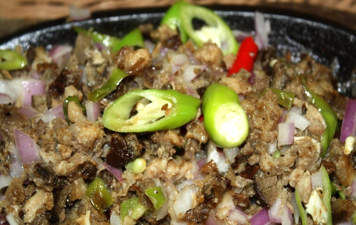
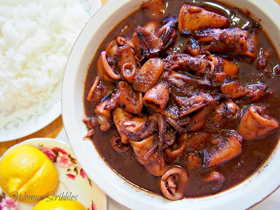

PINASarap Recipes
Sinigang na Baboy
Ingredients:
- pork belly (or buto-buto)
- beans (sitaw), cut in 2 inch length
- medium sized tomato, quartered
Instructions:
- Heat the pot and put-in the cooking oil
- Saute the onion until its layers separate from each other
- Add the pork belly and cook until outer part turns light brown
- Put-in the fish sauce and mix with the ingredients
- Pour the water and bring to a boil
- Add the taro and tomatoes then simmer for 40 minutes or until pork is tender
- Put-in the sinigang mix and chili
- Add the string beans (and other vegetables if there are any) and simmer for 5 to 8 minutes
- Put-in the spinach, turn off the heat, and cover the pot. Let the spinach cook using the remaining heat in the pot.
- Serve hot. Share and enjoy!

Sisig
Ingredients:
Instructions:
- Pour the water in a pan and bring to a boil Add salt and pepper.
- Put-in the pig’s ears and pork belly then simmer for 40 minutes to 1 hour (or until tender).
- Remove the boiled ingredients from the pot then drain excess water
- Grill the boiled pig ears and pork belly until done
- Chop the pig ears and pork belly into fine pieces
- In a wide pan, melt the butter or margarine. Add the onions. Cook until onions are soft
- Put-in the ginger and cook for 2 minutes
- Add the chicken liver. Crush the chicken liver while cooking it in the pan.
- Add the chopped pig ears and pork belly. Cook for 10 to 12 minutes
- Put-in the soy sauce, garlic powder, and chili. Mix well
- Add salt and pepper to taste
- Put-in the mayonnaise and mix with the other ingredients
- Transfer to a serving plate. Top with chopped green onions and raw egg.
- Serve hot. Share and enjoy!(Add the Calamansi before eating.)

Sweet and Spicy Squid
Ingredients:
- chili, (siling labuyo) minced (you can add more if you prefer more spicy)
Instructions:
- Drain squid in a colander for about 15 -20 minutes. (This is important because squid produces lots of water during cooking. Draining it beforehand will minimize water production later) Slice each squid into three to four pieces to produce squid rings.
- Heat oil in cooking pan or wok then add in the garlic and pepper. Saute for about two minutes while constantly tossing to prevent the garlic from being burnt.
- Add in the sugar and the soy sauce and stir mixture for 2 minutes. Add in squid and let cook for about 15-20 minutes, until the squid is tender. Stir occasionally. At this stage, squid will produce more water.
- Once the squid is tender, add in ketchup and stir until the ketchup is evenly distributed. Turn off heat and serve hot.
- Serve hot. Share and enjoy!

PINOY Fruit Salad
Ingredients:
Instructions:
- Open the fruit cocktail and drain the syrup by pouring it on a colander. Let the liquid drain totally (around 30 minutes).
- Arrange the drained fruit cocktail in a mixing bowl. Add the table cream, condensed milk, and maraschino cherries.
- Gently fold the mixture until all the ingredients are well distributed. Cover the mixing bowl with sling wrap then refrigerate overnight.
- Remove from the fridge and transfer to a serving bowl.
- Serve. Share and enjoy!

Saging Con Hielo
Ingredients:
- vanilla extract or vanilla essence
Instructions:
- Pour-in the water in a cooking pot. Let boil
- Put-in the brown sugar. Stir
- Add the vanilla extract (or essence) and salt. Stir once more. Cook for 1 minute
- Add the saba banana. Cover the cooking pot. Adjust the heat to low and cook for 10 to 15 minutes. Let the liquid reduce to half. Turn-off the heat and allow the banana to cool.
- Transfer to a serving bowl. Top with shaved ice with langka and pour evaporated milk.
- Serve. Share and enjoy!
4